Kanegasaki
Kanegasaki · Iwate
Kanegasaki
Highlighted on the Iwate map.
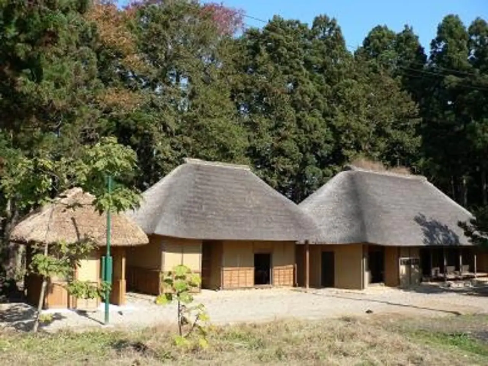
Stay
ホテルルートイン金ケ崎
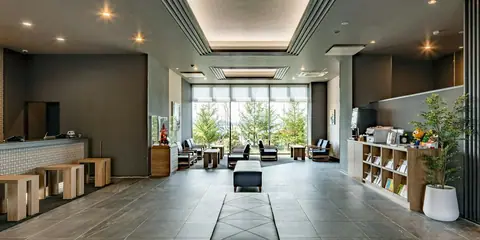
Hoteruruutoin Kin Ke Saki
Hotel in Kanegasaki, Iwate.
森と湖の里 千貫石温泉 湯元東館
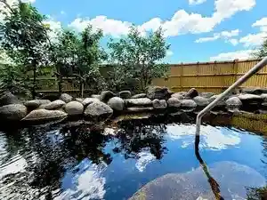
Mori To Mizuumi No Sato Sengan Ishi Onsen Yumoto Higashikan
Onsen lodging in Kanegasaki, Iwate.
Dining
メフレ市場食堂
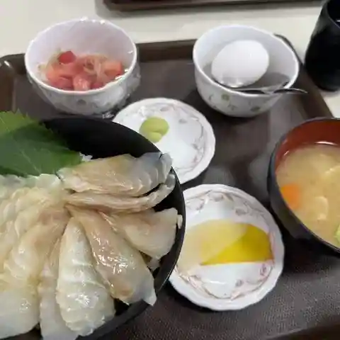
Mefure Shijou Shokudou
Seafood-bowl restaurant in Kanegasaki, Iwate.
まるみ ドライブイン
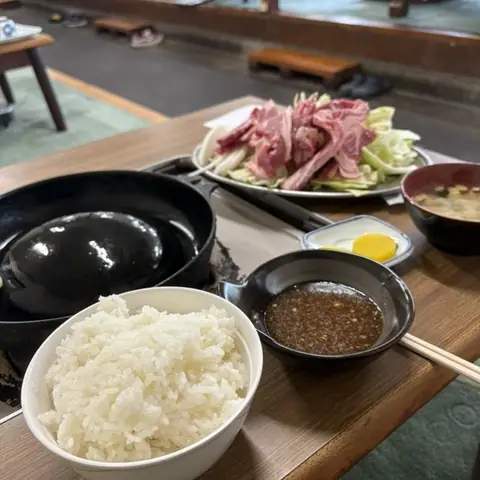
Marumi Doraibuin
Jingisukan (lamb BBQ) restaurant in Kanegasaki, Iwate.
高砂食堂
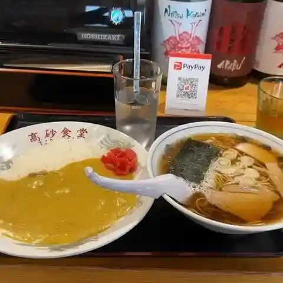
Takasago Shokudou
Shokudo diner in Kanegasaki, Iwate.
すずみ食堂
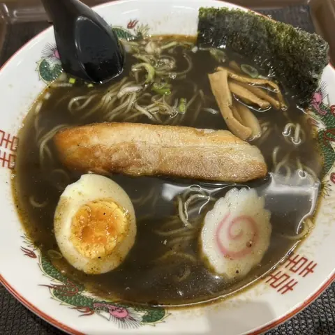
Suzumi Shokudou
Ramen shop in Kanegasaki, Iwate.
侍屋敷大松沢家
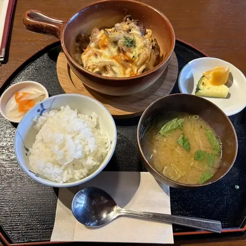
Samuraiyashiki Oomatsuzawa Ie
Shokudo diner in Kanegasaki, Iwate.
手もみ中華そば 髙はし
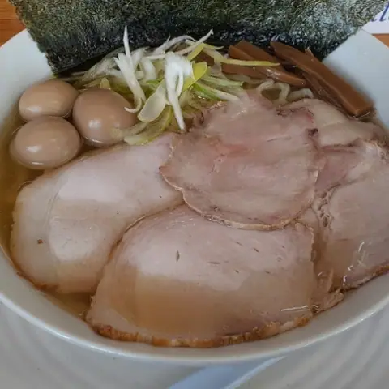
Te Momi Chuuka Soba Shi
Ramen shop in Kanegasaki, Iwate.
サバービア
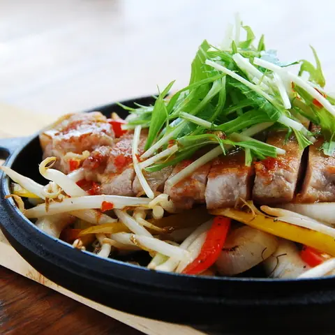
Sabaabia
Pasta restaurant in Kanegasaki, Iwate.
盛絽屋
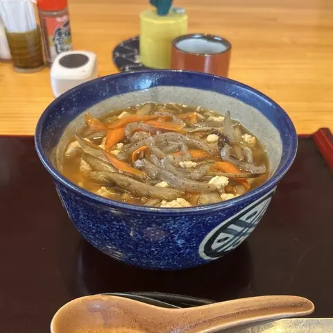
Jou Ro Ya
Soba restaurant in Kanegasaki, Iwate.
金福
Kinpuku
Chinese restaurant in Kanegasaki, Iwate.
PRIMI 金ヶ崎店
Primi Kin Ke Saki Mise
Italian restaurant in Kanegasaki, Iwate.
和洋食道 Ecru
Wayou Shokudou Ecru
Soup-curry restaurant in Kanegasaki, Iwate.
千貫石温泉 湯元 東館
Sengan Ishi Onsen Yumoto Higashikan
Hotel restaurant in Kanegasaki, Iwate.
カウベル
Kauberu
Gelato and ice-cream shop in Kanegasaki, Iwate.
さかた
Sakata
Bakery in Kanegasaki, Iwate.
タージマハル
Taajimaharu
Indian restaurant in Kanegasaki, Iwate.
stand cafe KICHI
Stand Cafe Kichi
Café in Kanegasaki, Iwate.
牧草の丘
Bokusou No Oka
Gelato and ice-cream shop in Kanegasaki, Iwate.
スゴス ヒトトキ
Sugosu Hitotoki
Café in Kanegasaki, Iwate.
和風レストラン星萬
Wafuu Resutoran Hoshi Man
Sushi restaurant in Kanegasaki, Iwate.
鎌田ガーデン
Kamada Gaaden
Shokudo diner in Kanegasaki, Iwate.
ゆず
Yuzu
Creative-cuisine restaurant in Kanegasaki, Iwate.
にんたまラーメン 金ヶ崎店
Nintama Raamen Kin Ke Saki Mise
Ramen shop in Kanegasaki, Iwate.
Sights
Moriyama General Park
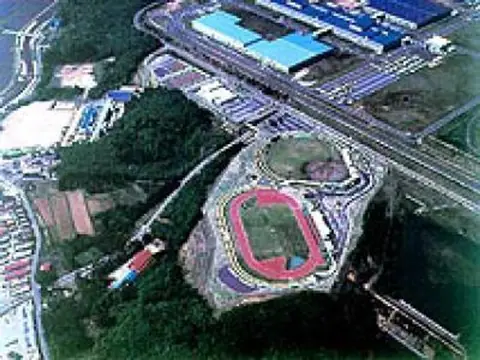
In addition to indoor facilities such as a heated pool, gym, aerobics, squash and racquetball courts, and sauna,
Iwate Prefectural Flower Center
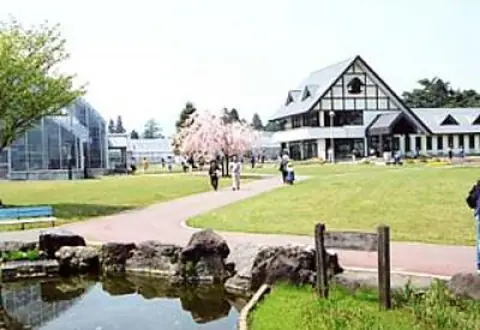
It is the home of many of Iwate's brightly colored flowers, including gentian, which boasts the highest production in Japan, as well as stock and statice.
Senganishi Forest Park
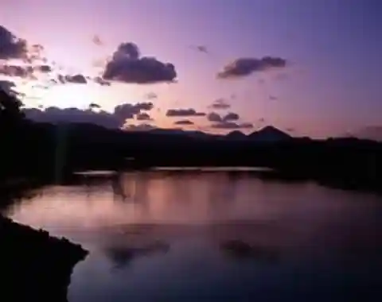
This is a park where you can get close to nature. You can enjoy unique scenery in every season.
Kanegasaki Yogai History Museum
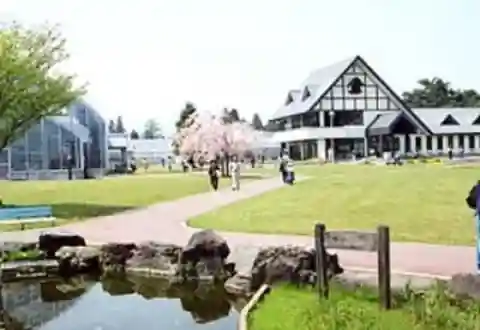
This is a facility where you can learn more about the characteristics of samurai mansions and the townscape through exhibits and videos.
Mt. Komagatake
Located on the border of Kanegasaki Town and Kitakami City, Mt.